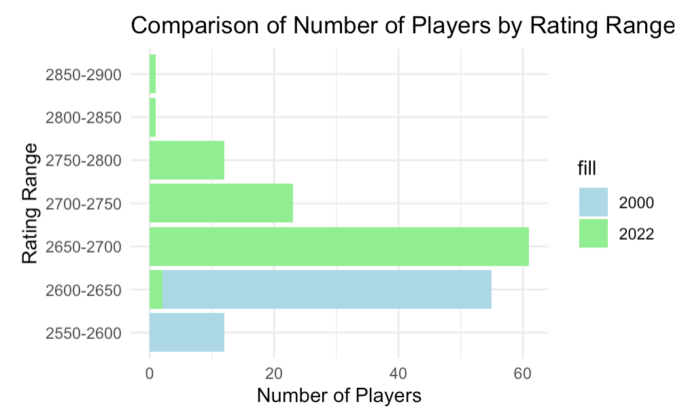
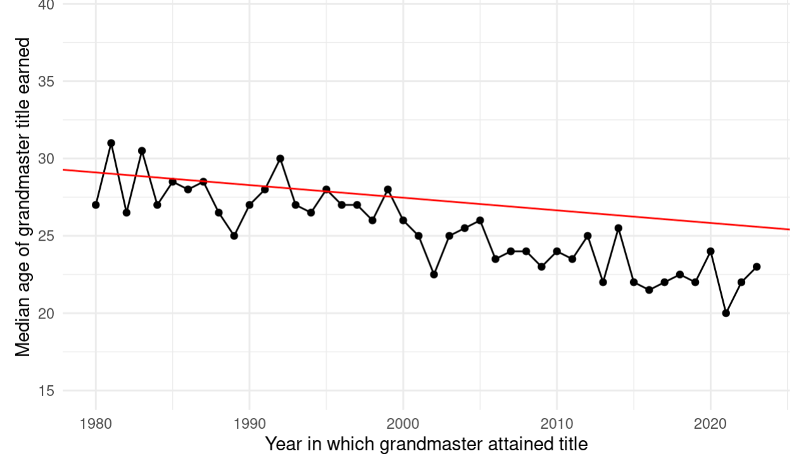
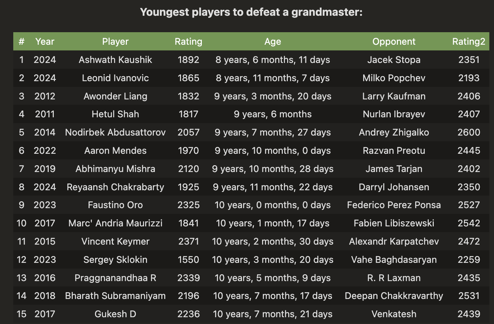
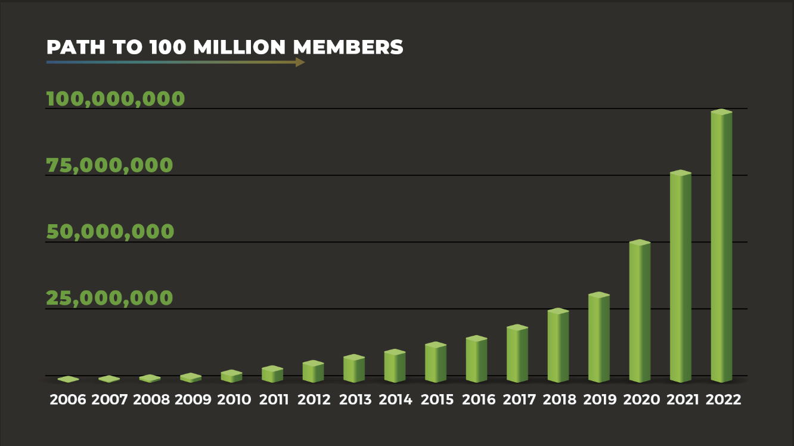

The New Era of Chess
By James Peter Chiu | June 4, 2024

Artificial intelligence (AI) and technology have advanced tremendously in the 21st century. While some experts predict a future where humans can benefit from AI and technology solving everything, others claim they will take over our world. What if there was a bridge between those two perspectives? Chess has been played for centuries, with its origins dating back to 6th century India. Over time, the popularity of chess spread globally and by the mid-20th century, chess tournaments could be played worldwide. At the time, the creators of the game never envisioned their game having some non-human entity playing them and most certainly even beating them. Nobody could have predicted a machine capable of playing a game of chess until it actually happened. Nowadays, chess AI has improved this recreational game and has made the competition the strongest it has ever been.
The International Chess Federation (FIDE) adopted the Elo rating system for competitive tournaments in 1970. For context, the top engines have an estimated rating of 3500, the peak rating achieved by a human was 2882, which Magnus Carlsen achieved back in May of 2014. The graph above compares the number of players in the FIDE top 100 by rating range. In 2000, just three years after World Champion Gary Kasparov was defeated by IBM’s Deep Blue, the ceiling of the top chess players was around 2600-2650. But in recent years, the floor rating has a few players in that range, with Magnus Carlsen leading this new era with a rating above 2850. The competition has been the highest it has ever been as seen by the jump in ELO rating of the FIDE top 100.
The Elo rating system also determines the eligibility to attain a certain title in chess, such as grandmaster. To earn the GM title, one must fulfill two requirements: reach the 2500 rating threshold and earn three norms. A norm is earned by playing a tournament of at least nine rounds in which either a third of the field are GMs or there are three GMs while achieving a performance rating of 2600. This graph displays the median age at which the GM title was attained each year. The red line represents the estimated median age to achieve the most prestigious chess title. Since the takeover of chess engines in 1997, the year of 1999 is the only year in which the median age topped the linear model. The age residual in the following years not only fall below the line, but is significantly below the predicted age. In 2021, the median age was just above 20 years old which is incredible considering the predicted age is over 25. Since 2018, we have seen four 12 year olds reach the GM title. Chess is evolving rapidly and chess AI is a significant reason of why we are entering this new, younger era of chess.
Another reason we are seeing this trend is actually due to the COVID-19 pandemic. When everyone was locked inside their homes, people started picking up chess as a new hobby. The table above displays the 15 youngest players to defeat a grandmaster. Believe it or not, a few of the names like Ashwath Kaushik and Faustino Oro learned how to play chess over COVID. The world’s top player under nine years old, Bodhana Sivananandan, also learned how to play during the pandemic. So why are these younger players thriving in today’s game? The short answer is technology. This new generation of chess has been heavily influenced by the takeover of newer chess engines and chess AI. Players now get much more insight from the analysis an engine provides after a game as they can go in-depth into a multitude of lines from a certain position. Preparation for matches has also never been easier as the wide database of chess games helps these prodigies study certain lines to prepare for an opponent. Before the use of engines, players could only do so much in analyzing their own games and reading books to study the opening game.
Chess.com is the leading platform for online chess everything. With everyone stuck inside their homes, chess.com made its’ smartest move yet. The website has seen its members count quadruple in three years since COVID and is now approaching 200 million members. A big reason for this trend was the release of Queen’s Gambit during the peak of the pandemic. In addition, Chess.com partnered with Twitch streamers to host a virtual tournament called PogChamps. Professional chess players would coach these video game streamers to prepare for the tournament with a $100,000 prize pool. PogChamps connected with many youth viewers who followed their favorite streamers, who then started learning how to play chess along with them. The amazing thing about chess is that you can constantly improve by yourself and it is available anytime. With younger players joining early on, we will continue to see this trend of youth dominating the game of chess. The game of chess will continue to benefit from the use of AI and technology.